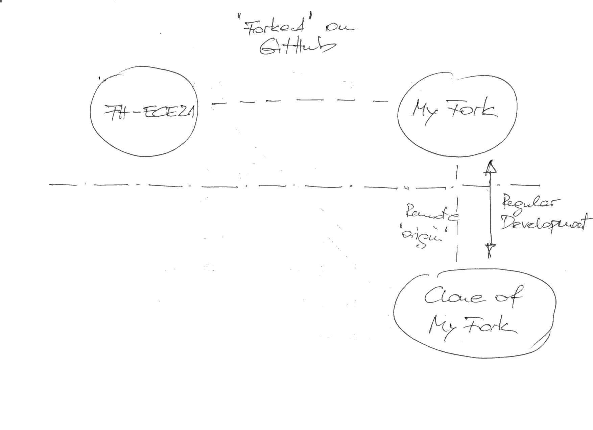
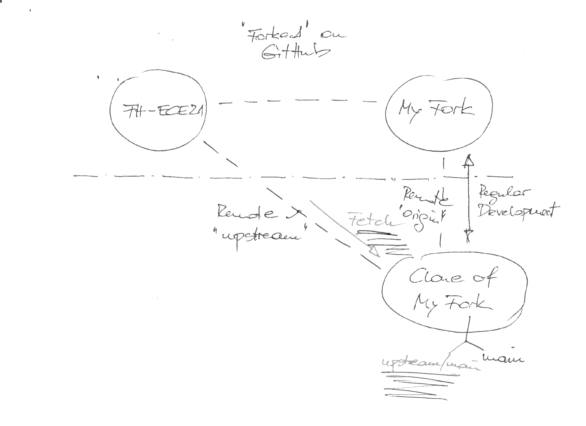
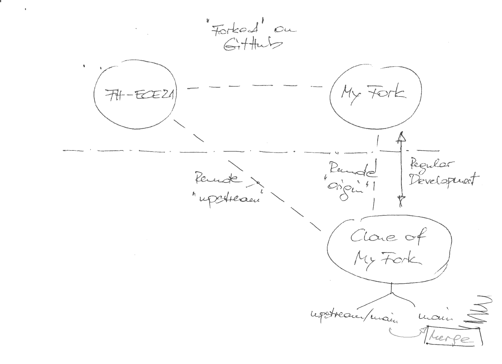
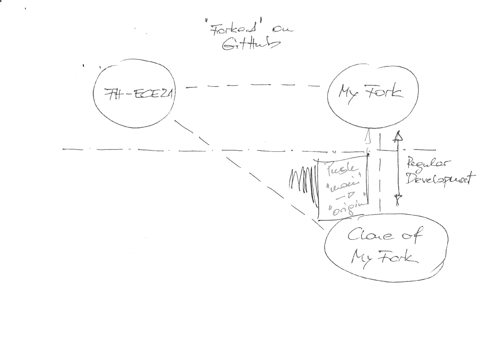

Working with Git In Our FH-ECE21 Project¶
Forks And Pull Requests¶
Github pull requests, especially …

Multiple Pull Requests: Pulling Upstream Changes (“Syncing” A Fork)¶
A forked repo [1] carries commits for a particular feature that the upstream repository (where the fork was created from) does not contain. Development on the fork is integrated back into upstream by filing a pull request.
{kind=link}
Multiple pull requests are possible, if not even the norm. Ongoing development on a fork might require pulling in upstream changes (changes from other forks that were integrated into upstream in the meantime). Here’s how this is done.
A clone of a fresh fork - one that has a number of commits, and that
has been pulled into the repository where it was cloned from (by
filing a pull request) - has no remotes other than the repo where it
was cloned from: the remote named origin. Pushes and pull
communicate with the origin remote by default.
$ git remote -v
origin https://github.com/FH-ECE21-Team/FH-ECE21-MQTT.git (fetch)
origin https://github.com/FH-ECE21-Team/FH-ECE21-MQTT.git (push)
Creating A Remote for Upstream (Done Only Once)¶
To prepare the clone for continuous syncing with the upstream of the
fork, you create another remote, namely one that points to where the
fork was made from. In this case the fork was made from the main
branch of the repository https://github.com/jfasch/FH-ECE21.
Create a remote named upstream (note that the name is arbitrary -
the name upstream appears most descriptive) pointing to
https://github.com/jfasch/FH-ECE21, the upstream of the fork:
$ git remote add upstream https://github.com/jfasch/FH-ECE21.git
{kind=link}
Updating The Fork (“Syncing” It From Its Upstream)¶
Fetch upstream Into Your Clone¶
In your clone of the fork (here
https://github.com/FH-ECE21-Team/FH-ECE21-MQTT.git), fetch the
remote content onto a local branch
Check situation
$ pwd /home/jfasch/My-Projects/FH-ECE21/FH-ECE21-MQTT $ git remote -v origin https://github.com/FH-ECE21-Team/FH-ECE21-MQTT.git (fetch) origin https://github.com/FH-ECE21-Team/FH-ECE21-MQTT.git (push) upstream https://github.com/jfasch/FH-ECE21.git (fetch) upstream https://github.com/jfasch/FH-ECE21.git (push)
Fetch
upstreamchanges since last integration (or initial fork, whichever happened last)$ git fetch upstream remote: Enumerating objects: 15, done. remote: Counting objects: 100% (15/15), done. remote: Compressing objects: 100% (6/6), done. remote: Total 12 (delta 9), reused 9 (delta 6), pack-reused 0 Unpacking objects: 100% (12/12), 1.09 KiB | 222.00 KiB/s, done. From https://github.com/jfasch/FH-ECE21 * [new branch] main -> upstream/main
For the interested, the local repository now has a remote tracking branch,
remotes/upstream/main(in addition toremotes/origin/mainthat it had from the beginning):$ git branch -a * main remotes/origin/HEAD -> origin/main remotes/origin/main remotes/upstream/main
{kind=link}
Merge upstream/main Into Local main¶

{kind=link}
Checkout branch to merge
upstreaminto. This should bemain.Check checked-out branch (should bemain)¶$ git branch * main
If not onmain, check that out¶$ git checkout main Previous HEAD position was 9bfda12 rename demo mosquitto client Switched to branch 'main' Your branch is up to date with 'origin/main'.
Merge
upstream(branchmain) changes into localmain. Here in this example, the merge goes in smoothly - a fast forward, because there were no local changes onmainthat made your local situation diverge fromupstream/main.- Note that this is not always so simple. Resolve conflicts (see
here)
$ git branch * main $ git merge upstream/main Updating 00aea42..9bfda12 Fast-forward bin/CMakeLists.txt | 4 ++-- bin/{mqtt-client.cpp => mosquitto-publish-demo.cpp} | 0 2 files changed, 2 insertions(+), 2 deletions(-) rename bin/{mqtt-client.cpp => mosquitto-publish-demo.cpp} (100%)
Push Into Fork On Github¶
{kind=link}
Your local clone is now in sync with the fork’s upstream. Now it’s time to bring those local changes back where the clone comes from.
$ git push
Footnotes